🖨️ Para imprimir: pressione Ctrl + P, escolha a impressora (ou "Salvar como PDF") e confirme.
Este aviso não sai na impressão.
Nova Tratores · Portal Corporativo
Tutorial — PPV e Catálogo de Peças
Para o Setor de Peças. Este guia mostra, passo a passo e com imagens do sistema,
como usar o módulo PPV (Pedido de Peças para Venda) e o Catálogo de peças Mahindra no portal.
Parte 1 O módulo PPV
O PPV é onde ficam os pedidos de peças (venda balcão, peças para técnico, orçamentos de peças e remessas).
Cada pedido é um card que anda por fases (Orçamento → Execução → Concluída), acompanhando a O.S. quando estiver vinculada.
1
Como abrir o PPV
Entre no portal com o seu usuário. No menu lateral (botão ☰ no canto superior esquerdo), clique em
PEÇAS → Peças (Pedido de Venda).
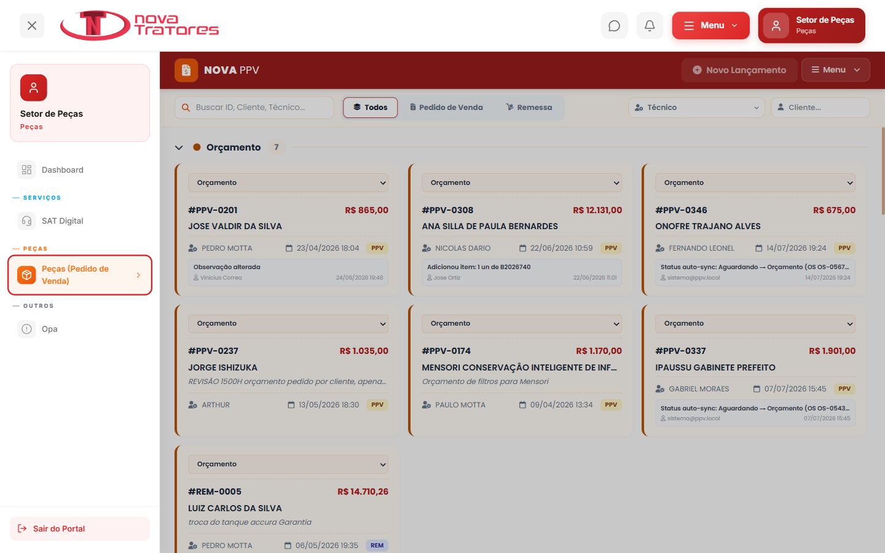
O item "Peças (Pedido de Venda)" fica no grupo PEÇAS do menu lateral (destacado em vermelho).
2
A tela de Gestão (visão geral)
Ao abrir, você vê todos os pedidos agrupados por fase. Cada card mostra o número (#PPV-0000 ou #REM-0000),
o valor, o cliente, o técnico, a data e a última movimentação.
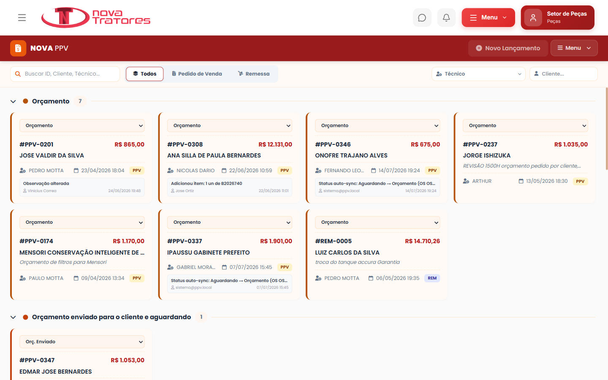
Tela principal do PPV: os pedidos agrupados por fase (Orçamento, Execução, etc.).
Fase
O que significa
Orçamento / Orç. Enviado
Pedido em cotação ou aguardando resposta do cliente
Execução / Diagnóstico
Serviço em andamento (peças em uso)
Aguar. Peças / Comercial / Técnico / Outros
Pedido parado esperando alguma coisa
Rel. Concluído / Concluída
Serviço finalizado
Cancelada
Pedido cancelado
Dica: quando o pedido está vinculado a uma O.S., a fase sincroniza sozinha com o status
da O.S. (aparece "Status auto-sync" no card). Não precisa mover manualmente nesses casos.
3
Filtros e busca
Na barra abaixo do título você pode:
Buscar por número do PPV, nome do cliente ou técnico (campo da esquerda);
Filtrar por tipo: Todos / Pedido de Venda / Remessa;
Filtrar por Técnico e por Cliente (campos da direita).
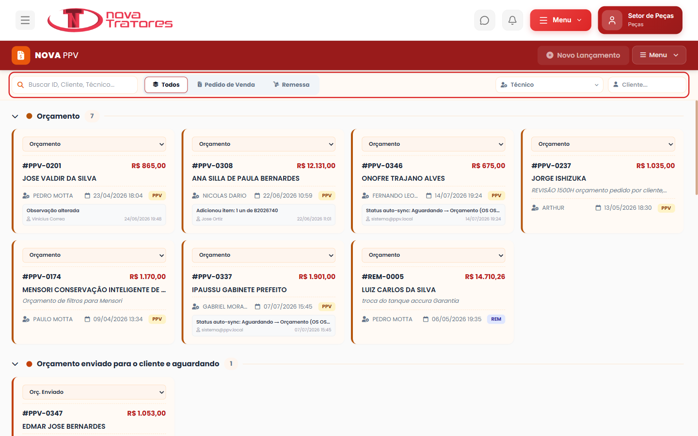
Barra de filtros (destacada em vermelho): busca, tipo, técnico e cliente.
4
Mudar a fase de um pedido
Cada card tem um seletor de fase na parte de cima. Basta clicar e escolher a nova fase — a mudança é salva na hora
e fica registrada no histórico do pedido.
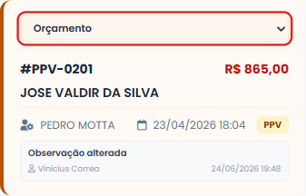
O seletor de fase fica no topo de cada card.
5
Criar um novo pedido (Novo Lançamento)
Clique no botão + Novo Lançamento no canto superior direito da tela do PPV. Preencha o formulário da esquerda:
Tipo do Pedido:Pedido de Venda (PPV) ou Remessa (REM);
Motivo da Saída: Venda Balcão, Orçamento Cliente, Saída Técnico (com ou sem O.S.);
Técnico (obrigatório) — quem vai usar/levar as peças;
Cliente (obrigatório) — clique no campo para abrir a busca (passo 6);
Ordem de Serviço (opcional) — vincule a O.S. para o pedido acompanhar o status dela;
Projeto e Observações (opcionais).
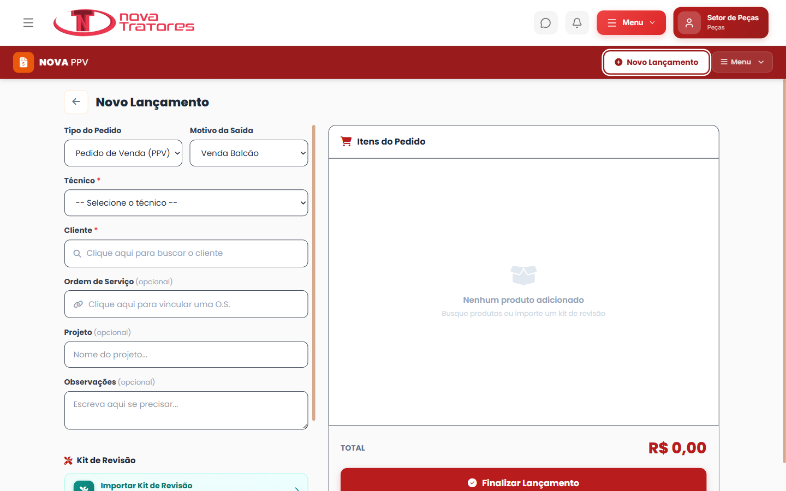
Formulário do Novo Lançamento: dados à esquerda, carrinho de itens à direita.
6
Buscar o cliente
Ao clicar no campo Cliente, abre a janela de busca. Digite parte do nome, do CNPJ/CPF ou da cidade
e clique no cliente certo na lista.
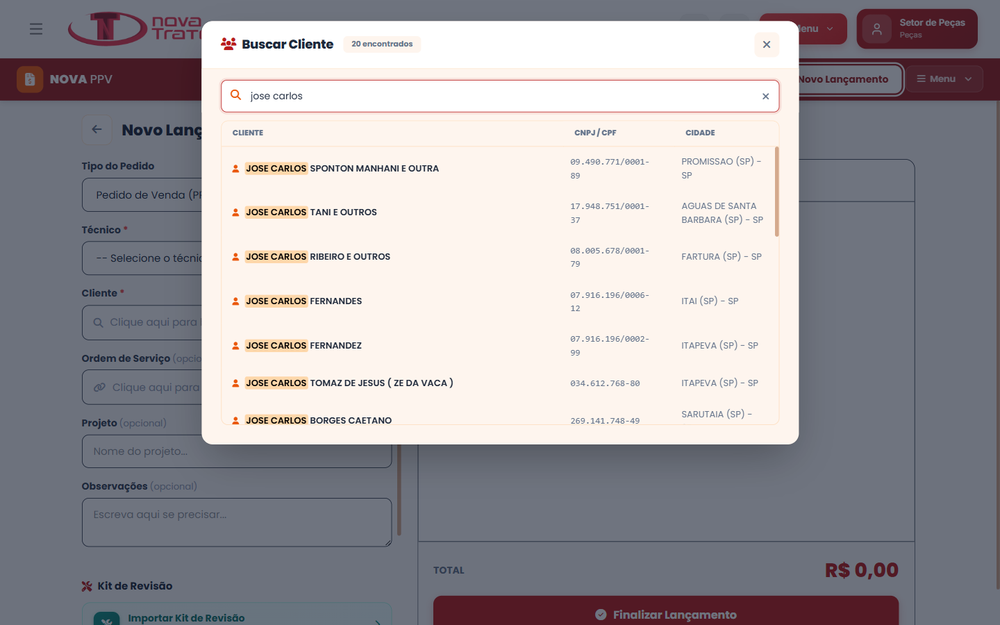
Busca de cliente: digite e clique na linha para selecionar.
7
Adicionar produtos ao pedido
Na seção Adicionar Produto, clique em "Clique para buscar produto". Digite o código ou nome da peça e tecle Enter.
A lista mostra o preço, a empresa (NOVA ou CASTRO) e a origem. Clique na linha para escolher a peça.
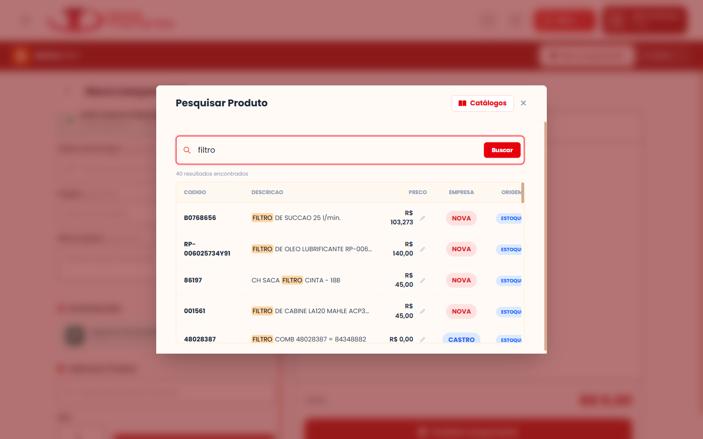
Busca de produto. Repare no botão "Catálogos" no canto — ele abre o Catálogo Mahindra (Parte 2).
Depois de escolher, informe a Qtd e clique em + Adicionar ao Carrinho.
Repita para cada peça do pedido.
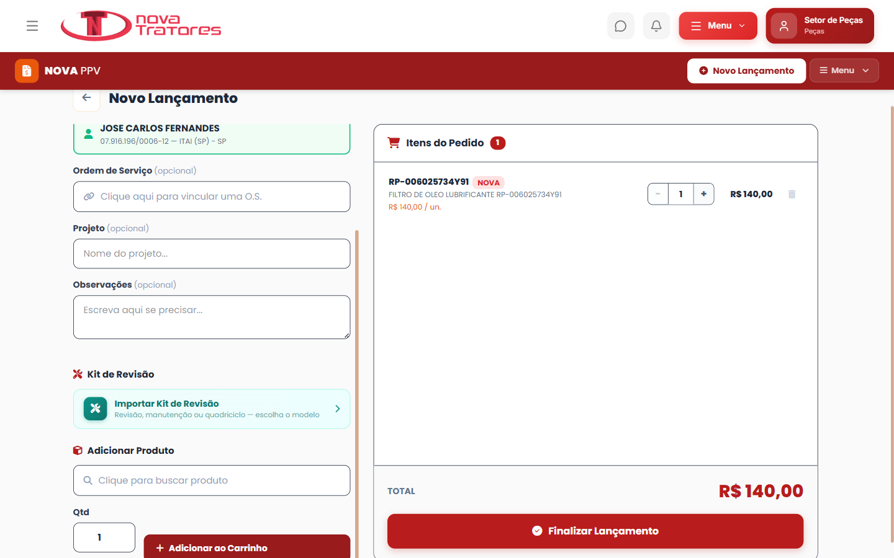
Pedido montado: cliente selecionado (verde) e item no carrinho com o total calculado.
Atenção: só clique em Finalizar Lançamento quando o pedido estiver completo.
Ao finalizar, o sistema salva o pedido e já abre a janela de impressão do documento do PPV.
8
Importar Kit de Revisão (atalho)
Para revisões (50H, 300H, 600H, 900H, 1200H…), use o botão Importar Kit de Revisão.
Escolha o modelo do trator e as horas — todas as peças do kit entram no carrinho de uma vez.
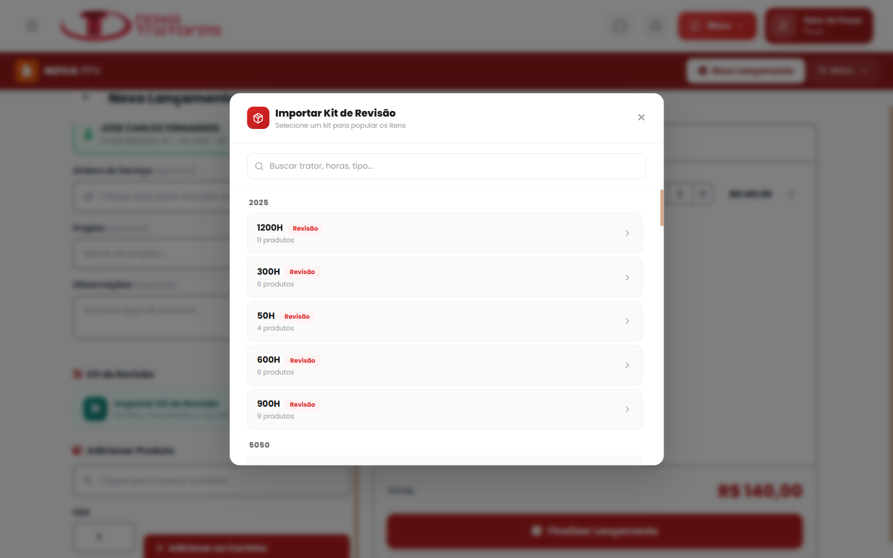
Kits prontos por modelo (2025, 5050, 6060…) e horas de revisão.
9
Ver e editar um pedido existente
Clique em qualquer card para abrir os detalhes. Nessa janela você pode:
Imprimir o documento do pedido (botão no topo);
Ver o Log (histórico de tudo que aconteceu no pedido);
Trocar a fase, o técnico, o motivo, a O.S. vinculada e o cliente;
Salvar com Salvar Alterações.
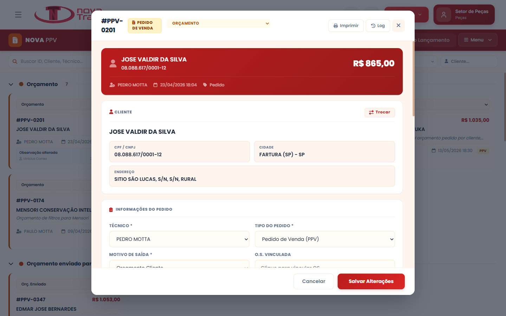
Detalhes do pedido: topo com Imprimir / Log / fase, dados do cliente e informações do pedido.
Descendo a tela, na seção Itens & Materiais dá para adicionar mais peças, importar kit, editar (ícone de lápis)
e registrar devolução de peça não usada (ícone de seta circular). Abaixo há também o campo de Desconto.
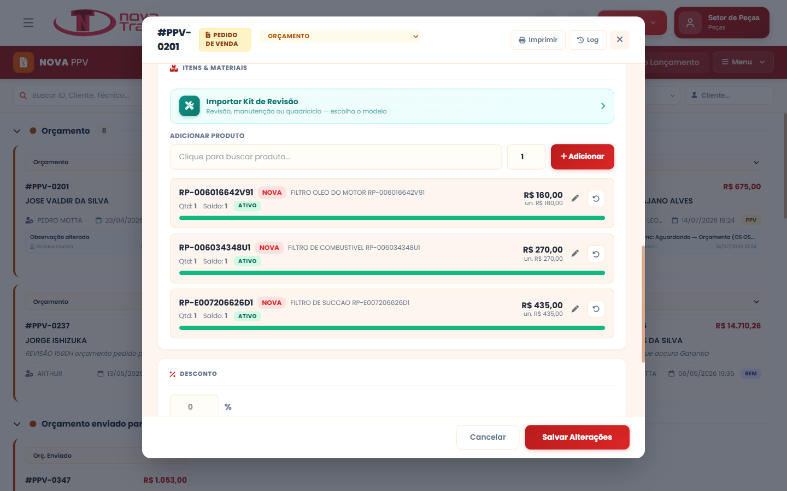
Itens & Materiais: cada linha tem quantidade, saldo, preço, edição e botão de devolução.
Parte 2 O Catálogo de Peças (Mahindra)
O Catálogo é o "livro de peças" digital: você navega pelo trator → sistema → figura (vista explodida)
e encontra o código correto de cada peça. E melhor: dá para montar um carrinho e gerar o PPV ou Orçamento direto de lá.
10
Onde fica o Catálogo
Dentro do PPV, clique no botão ☰ Menu (canto superior direito) e depois em Catálogo.
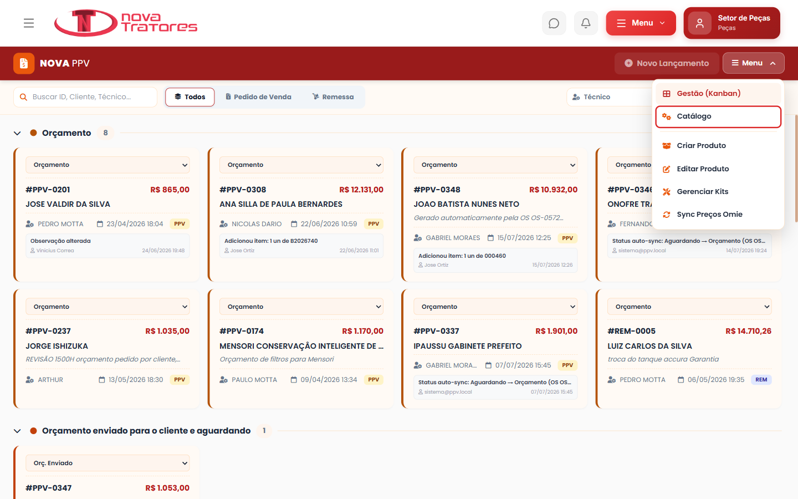
Menu do PPV: além do Catálogo, aqui ficam Criar/Editar Produto, Gerenciar Kits e Sync Preços Omie.
Dica: o Catálogo também abre pelo botão "Catálogos" dentro da janela de busca de produto
(passo 7) — nesse caso, a peça escolhida já cai direto no lançamento que você está montando.
11
Escolher o trator
A primeira tela mostra os modelos (6075L, 5050, 6060…). Clique no trator do cliente.
O número de figuras indica o quanto o catálogo daquele modelo está completo.
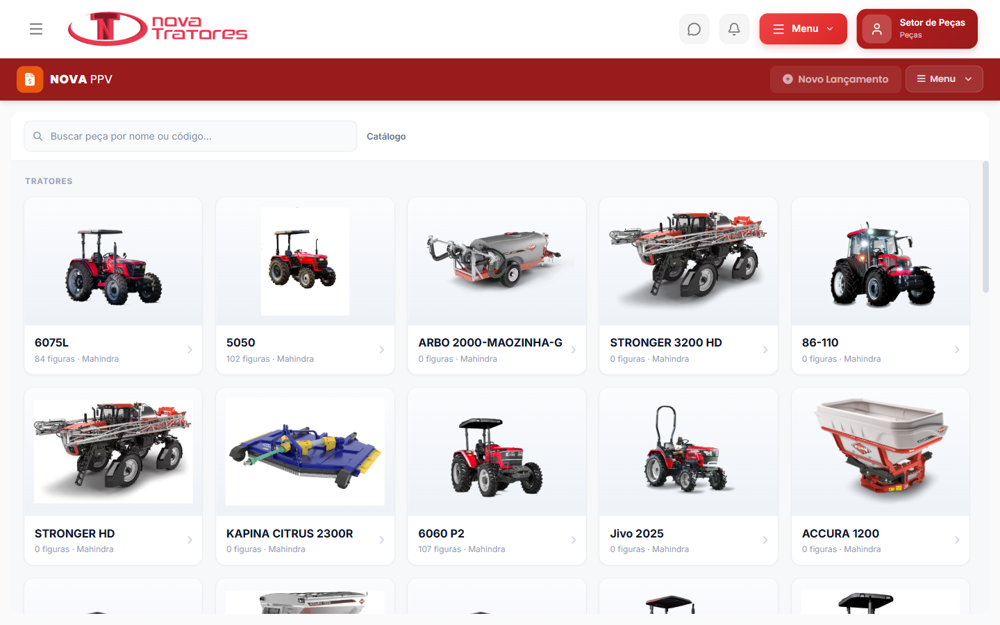
Modelos disponíveis no catálogo.
12
Escolher o sistema
Dentro do trator, as peças estão organizadas por sistema: Motor, Transmissão, Hidráulica, Elétrica, Freio, etc.
Clique no sistema onde a peça fica.
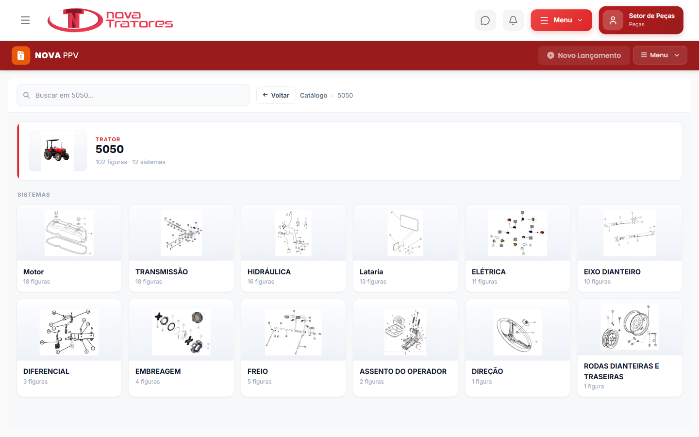
Sistemas do trator 5050 — use o "Voltar" ou o caminho (Catálogo › 5050) para navegar.
13
Escolher a figura
Cada sistema tem várias figuras (vistas explodidas). Escolha a que corresponde à parte do trator que você procura.
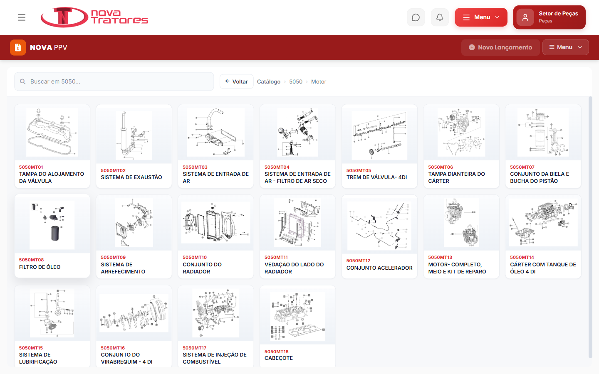
Figuras do sistema Motor do 5050 (tampa de válvula, exaustão, filtro de ar, radiador…).
14
Identificar a peça na vista explodida
Na figura, cada peça tem um número (REF). A lista da direita mostra código Mahindra, nome e quantidade usada no conjunto.
Passe o mouse (ou clique) num número da imagem → a linha correspondente acende na lista;
Passe o mouse numa linha da lista → o número acende na imagem;
O código em vermelho é o código para orçar/vender a peça.
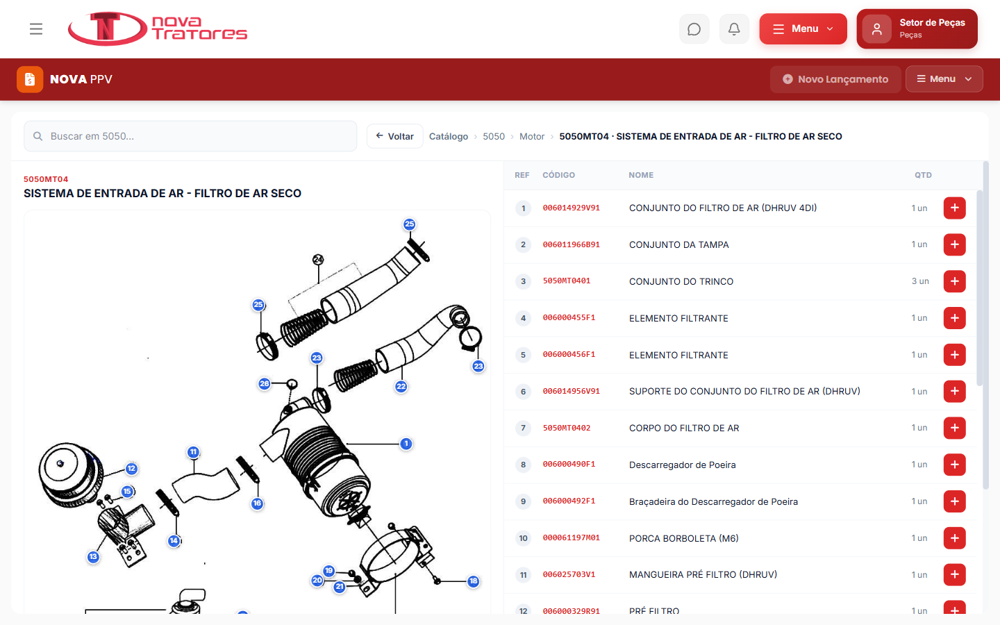
Vista explodida + lista de peças. O botão vermelho + adiciona a peça ao carrinho.
15
Montar o carrinho e gerar PPV ou Orçamento
Clique no + de cada peça que o cliente precisa. Um botão 🛒 Carrinho aparece no canto inferior direito
com a contagem de itens.
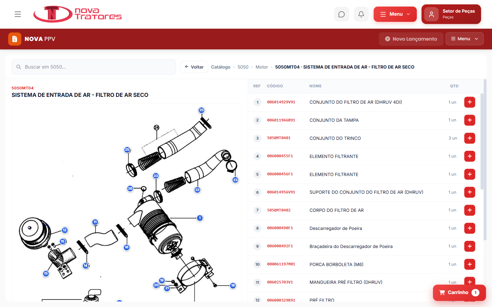
Depois de adicionar peças, o botão do Carrinho aparece no canto inferior direito.
Abra o carrinho para: ajustar quantidades, remover itens, buscar o cliente e finalizar clicando em
Orçamento ou PPV.
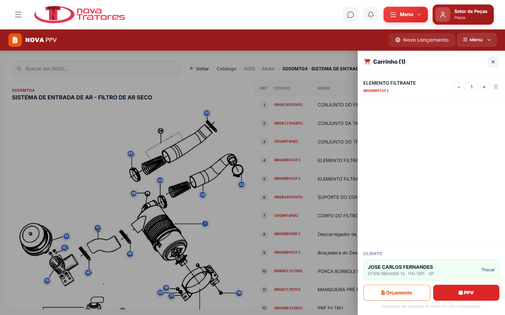
Carrinho do Catálogo: item, cliente selecionado e os dois botões de geração.
Dica: os preços são puxados do Omie automaticamente na hora de criar o documento —
você não precisa digitar preço nenhum. O PPV criado aparece na tela de Gestão, na fase Orçamento.
16
Busca rápida por nome ou código
Se você já sabe o nome ou parte do código da peça, use o campo de busca no topo do Catálogo.
O resultado mostra em qual figura a peça aparece (link azul) — clique para abrir a vista explodida, ou clique no +
para jogar direto no carrinho.
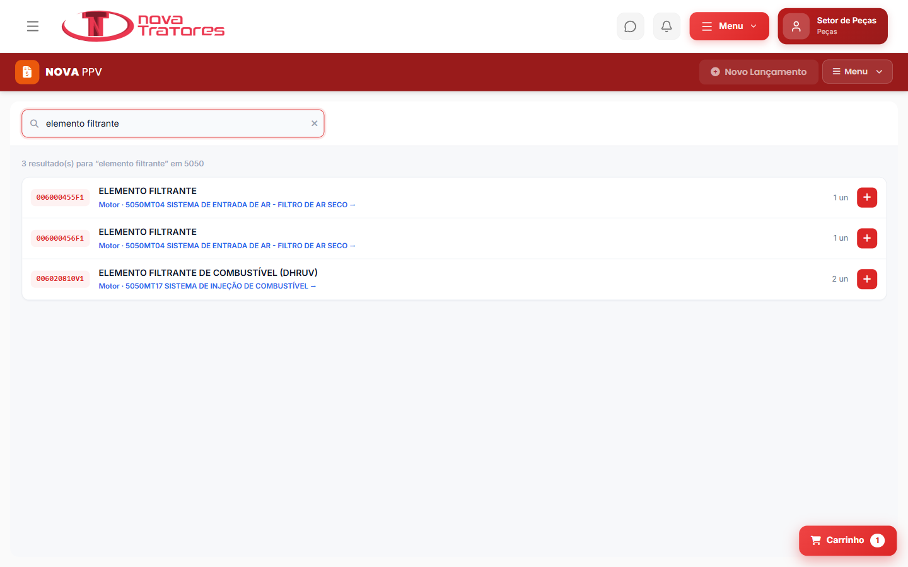
Busca por "elemento filtrante" dentro do trator 5050.
Achar o código de uma peça: Menu → Catálogo → trator → sistema → figura → código em vermelho.
Orçamento a partir do catálogo: adicionar peças no carrinho → escolher cliente → botão Orçamento ou PPV.
Revisão: Novo Lançamento → Importar Kit de Revisão → modelo + horas.
Portal Nova Tratores — Tutorial PPV & Catálogo · Julho/2026 ·
Dúvidas: fale com o administrador do portal ou pergunte ao assistente Tratorilson (balão de chat no canto da tela).